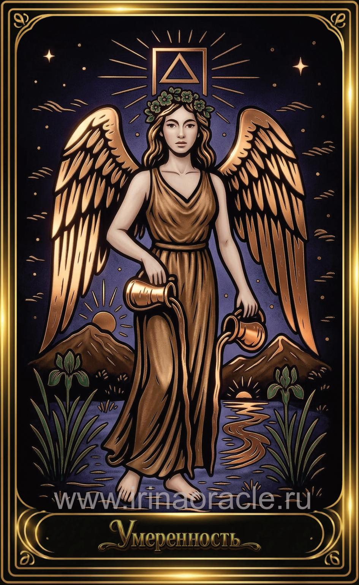

Умеренность — значение карты Таро
Умеренность — значение карты Таро

Умеренность — это карта гармонии, баланса и внутреннего равновесия. Она символизирует золотую середину, умение сочетать противоположности, мягкое исцеление и спокойное течение жизни. Это энергия ангельской поддержки, терпения и мудрого подхода.
Общее значение
Умеренность указывает на необходимость баланса, спокойствия и постепенности. Это карта, которая говорит: не спеши, не дави, не перегибай. Всё созревает в своём темпе. Она помогает найти гармонию между эмоциями, разумом и действиями.
Это время мягкого прогресса, внутреннего мира и восстановления.
Любовь и отношения
В любви Умеренность говорит о гармонии, доверии, спокойствии и зрелом взаимодействии. Это отношения, где партнёры уважают границы друг друга и стремятся к балансу. Иногда карта указывает на медленное, но стабильное развитие.
В тени может проявляться чрезмерная терпимость, избегание конфликтов или попытка «сгладить» то, что требует честного разговора.
Работа и финансы
В работе Умеренность указывает на стабильность, постепенный рост, умение сотрудничать и находить компромиссы. Это благоприятное время для долгосрочных проектов и спокойного развития.
В финансах карта говорит о балансе, умеренности и разумном подходе. Она поддерживает стратегию «медленно, но верно».
Здоровье
Умеренность указывает на восстановление, исцеление и гармонизацию процессов. Это карта, поддерживающая мягкие методы, баланс нагрузки и отдыха, а также эмоциональное равновесие.
Иногда она говорит о необходимости умеренности в питании, привычках и ритме жизни.
Совет карты
Найди золотую середину. Действуй мягко, спокойно и осознанно. Умеренность советует избегать крайностей, сохранять баланс и доверять естественному ходу событий.
Гармония — это результат терпения и внутреннего равновесия.
Теневая сторона
В тени Умеренность проявляется как застой, чрезмерная пассивность, страх перемен или попытка удерживать баланс любой ценой, даже если ситуация требует решительности.
Карта напоминает: гармония — это не избегание, а мудрое взаимодействие.